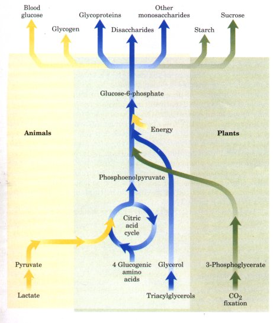
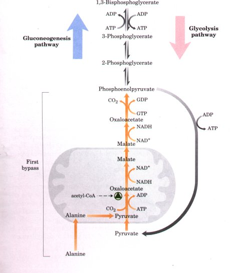
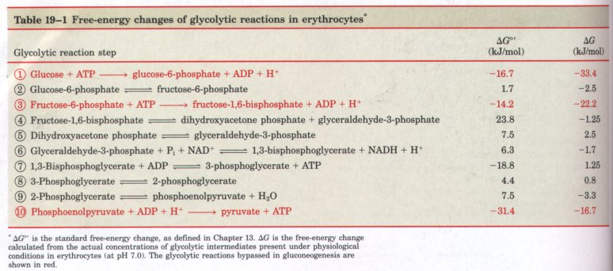
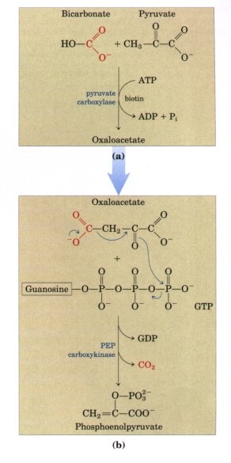
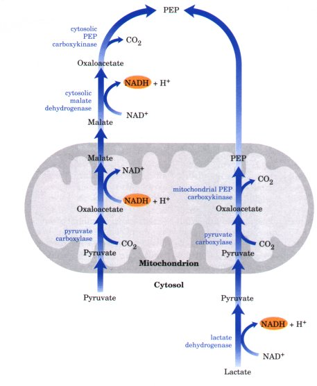

oxaloacetate + ADP + Pi + H+ .............(19-1)
oxaloacetate + ADP + Pi + H+ .............(19-1)We have now reached a turning point in the study of cellular metabolism. The preceding chapters of Part III have described how the major foodstuffs-carbohydrates, fatty acids, and amino acids-are degraded via converging catabolic pathways to enter the citric acid cycle and yield their electrons to the respiratory chain. The exergonic flow of electrons to oxygen is coupled to the endergonic synthesis of ATP. We now turn to anabolic pathways, which use chemical energy in the form of ATP and NADH or NADPH to synthesize cell components from simple precursor molecules. Anabolic pathways are generally reductive rather than oxidative. Catabolism and anabolism proceed simultaneously in a dynamic steady state, so that the energy-yielding degradation of cell components is counterbalanced by biosynthetic processes, which create and maintain the intricate orderliness of living cells.
Several organizing principles of biosynthesis deserve emphasis at the outset. The first principle is that the pathway taken in the synthesis of a biomolecule is usually different from the pathway taken in its degradation. Although the two opposing pathways may share many reversible reactions, there is always at least one enzymatic step that is unique to each pathway. If the reactions of catabolism and anabolism were catalyzed by the same set of enzymes acting reversibly, the flow of carbon through these pathways would be dictated exclusively by mass action (p. 371), not by the cell's changing needs for energy, precursors, or macromolecules.
Second, corresponding anabolic and catabolic pathways are controlled by different regulatory enzymes. These opposing pathways are regulated in a coordinated, reciprocal manner, so that stimulation of the biosynthetic pathway is accompanied by inhibition of the corresponding degradative pathway, and vice versa. Biosynthetic pathways are usually regulated at their initial steps, so that the cell avoids wasting precursors to make unneeded intermediates; intrinsic economy prevails in the molecular logic of living cells.
Third, energy-requiring biosynthetic processes are coupled to the energy-yielding breakdown of ATP in such a way that the overall process is essentially irreversible in vivo. Thus the total amount of ATP (and NAD(P)H) energy used in a given biosynthetic pathway always exceeds the minimum amount of free energy required to convert the precursor into the biosynthetic product. The resulting large, negative, free-energy change for the overall process assures that it will occur even when the concentrations of precursors are relatively low.
This chapter provides many opportunities for elaboration of the three principles outlined above, as we describe pathways for carbohydrate biosynthesis. The chapter is divided into four parts. First we consider gluconeogenesis, the ubiquitous pathway for synthesis of glucose. We then describe how glucose is converted into a variety of polysaccharides: glycogen in animals and many microorganisms, starch and sucrose in plants. At this point the focus shifts entirely to plants. The third topic is the incorporation of CO2 into more complex molecules (CO2 fixation), a process that represents the ultimate source of reduced carbon compounds for all organisms. The chapter ends with a discussion of the regulation of carbohydrate metabolism in plants. The overall regulation of carbohydrate metabolism in mammals is covered separately in Chapter 22.
GluconeogenesisWe begin our survey of biosynthetic processes with the central pathway that leads to the formation of different carbohydrates from noncarbohydrate precursors in animal tissues (Fig. 19-1). The biosynthesis of glucose is an absolute necessity in all mammals, because the brain and nervous system, as well as the kidney medulla, testes, erythrocytes, and embryonic tissues, require glucose from the blood as their sole or major fuel source. The human brain alone requires over 120 g of glucose per day. Mammalian cells constantly make glucose directly from simpler precursors, such as pyruvate and lactate, and then pass the glucose into the blood. Other important carbohydrates, including glycogen, are also made from simple precursors (Fig. 19-1). The formation of glucose from nonhexose precursors is called gluconeogenesis ("formation of new sugar"). Gluconeogenesis is a universal pathway, found in all animals, plants, fungi, and microorganisms. The reactions are the same in every case. The important precursors of glucose in animals are lactate, pyruvate, glycerol, and most of the amino acids (Fig. 19-1). In higher animals gluconeogenesis occurs largely in the liver and to a much smaller extent in kidney cortex. In plant seedlings, stored fats and proteins are converted into the disaccharide sucrose for transport throughout the developing plant. Glucose and its derivatives are precursors in the synthesis of plant cell walls, nucleotides and coenzymes, and a variety of other essential metabolites. Many microorganisms are able to grow on simple organic compounds such as acetate, lactate, and propionate, which they convert to glucose by gluconeogenesis. |
 Figure 19-1 The pathway from phosphoenolpyruvate to glucose-6-phosphate is common to the biosynthetic conversion of many different precursors into carbohydrates in animals and plants Although the reactions of gluconeogenesis are the same in all organisms, the metabolic context and the regulation of the pathway dif fer from organism to organism, and from tissue to tissue. In this chapter we focus iirst on gluconeogenesis as it occurs in the mammalian liver. Later, its role and regulation in plants will be considered. .Just as the glycolytic conversion of glucose into pyruvate is a central pathway for catabolism of carbohydrates, the conversion of pyruvate into glucose is a central pathway in gluconeogenesis. These pathways are not identical, although they share several steps (Fig. 19-2). Seven of the ten enzymatic reactions of gluconeogenesis are the reverse of glycolytic reactions (discussed in Chapter 14). |
However, three steps in glycolysis are essentially irreversible in vivo and cannot be used in gluconeogenesis: the conversion of glucose to glucose-6-phosphate by hexokinase, the phosphorylation of fructose6-phosphate to fructose-1,6-bisphosphate by phosphofructokinase-l, and the conversion of phosphoenolpyruvate to pyruvate by pyruvate kinase (Fig. 19-2). With pathway intermediates at concentrations typically found in an erythrocyte, these three reactions are characterized by a large and negative free-energy change, ΔG, whereas other glycolytic reactions have a ΔG near 0 (Table 19-l, p. 602). These three steps are bypassed by a separate set of enzymes, catalyzing different reactions with different equilibria; they function in gluconeogenesis but not in glycolysis and are irreversible in the direction of glucose synthesis. Thus, both glycolysis and gluconeogenesis are irreversible processes in cells. Gluconeogenesis and glycolysis are independently regulated through controls exerted on specific enzymatic steps that are not common to the two pathways.
We begin by considering the three bypass reactions of gluconeogenesis.
 |
Figure 19-2 The opposing pathways of glycolysis and gluconeogenesis in rat liver. The bypass reactions of gluconeogenesis are shown in orange. Two major sites of regulation of gluconeogenesis are also shown; these are discussed later in the text. An alternative route for oxaloacetate produced in the mitochondrion is shown in Fig. 19-4. |

The first of the bypass reactions in gluconeogenesis is the conversion of pyruvate into phosphoenolpyruvate (Fig. 19-2). This reaction cannot occur by reversal of the pyruvate kinase reaction (p. 413), which has a large, negative, standard free-energy change and has been found to be irreversible under the conditions that exist in intact cells (Table 19-l, step 10 ). Instead, the phosphorylation of pyruvate is achieved by a roundabout sequence of reactions that in mammals and some other organisms requires the cooperation of enzymes in both the cytosol and mitochondria. As we will see, the pathway shown in Figure 19-2 and described in more detail below is one of two paths from pyruvate to phosphoenolpyruvate; it is the predominant one when pyruvate or alanine is the gluconeogenic precursor. A second pathway, described later, predominates when lactate is the gluconeogenic precursor.
First, pyruvate is transported from the cytosol to the mitochondria, or generated within mitochondria by deamination of alanine. Then, pyruvate carboxylase, a mitochondrial enzyme that requires biotin, converts the pyruvate to oxaloacetate:
Pyruvate + HCO3- + ATP oxaloacetate + ADP + Pi + H+ .............(19-1)
Pyruvate carboxylase is the first regulatory enzyme in the gluconeogenic pathway; acetyl-CoA is a required positive effector for the enzyme. This is also an anaplerotic reaction (Chapter 15), and as one of the major entry points in the citric acid cycle it affects many metabolic pathways. The reaction mechanism is described in Figure 15-13b.
The oxaloacetate formed from pyruvate in the mitochondrion is reversibly reduced to malate by mitochondrial malate dehydrogenase at the expense of NADH:
Oxaloacetate + NADH + H+  L-malate + NAD+ (19-2)
L-malate + NAD+ (19-2)
The malate then leaves the mitochondrion via the malate-α-ketoglutarate transporter in the inner mitochondrial membrane (see Fig. 18-25). In the cytosol, malate is reoxidized to oxaloacetate, with the production of cytosolic NADH:
Malate + NAD+ oxaloacetate + NADH + H+ ................ (19-3)
The oxaloacetate is then converted to phosphoenolpyruvate (PEP) by phosphoenolpyruvate carboxykinase in a Mg2+-dependent reaction in which GTP serves as the phosphate donor (Fig. 19-3):
Oxaloacetate + GTP phosphoenolpyruvate + CO2 + GDP .............. (19-4)
This reaction is reversible under intracellular conditions.
The overall equation for this set of bypass reactions, the sum of Equations 19-1 through 19-4, is
Pyruvate+ATP+GTP+HCO3-
phosphoenolpyruvate+ADP+GDP+Pi+H++CO2
.................(19-5)
ΔG°' = 0.9 kJ/mol
Two high-energy phosphate groups (one from ATP and one from GTP), each yielding 30.5 kJ/mol under standard conditions, must be expended to phosphorylate one molecule of pyruvate to PEP, thus requiring an input of 61 kJ/mol under standard conditions. In contrast, when PEP is converted into pyruvate during glycolysis, only one ATP is generated from ADP. Although the standard free-energy change (ΔG°') of the net reaction leading to PEP is 0.9 kJ/mol, the actual free-energy change (ΔG), calculated from measured cellular concentrations of intermediates, is very strongly negative (ΔG = -25 kJ/mol); this results from the ready consumption of PEP in other reactions, such that its concentration remains low. The reaction is thus irreversible in the cell.
| Note that the CO2 lost in the PEP
carboxykinase reaction is the same molecule that is added
to pyruvate in the pyruvate carboxylase step (Fig. 19-3).
This carboxylation-decarboxylation sequence represents a
way of "activating" pyruvate in that the
decarboxylation of oxaloacetate facilitates PEP
formation. In Chapter 20 we will see that a similar
carboxylation step is used to activate acetyl-CoA for
fatty acid biosynthesis. The path of these reactions through the mitochondria is not coincidental. The [NADH]/[NAD+] ratio in the cytosol is 8 × 10-4, about 105 times lower than in mitochondria. Because cytosolic NADH is consumed in gluconeogenesis (in the conversion of 1,3-bisphosphoglycerate to glyceraldehyde-3-phosphate; Fig. 19-2), glucose biosynthesis cannot proceed unless NADH is made available. The transport of malate from the mitochondrion to the cytosol and its reconversion there to oxaloacetate has the effect of moving reducing equivalents in the form of NADH to the cytosol, where they are scarce. This path from pyruvate to PEP therefore provides an important balance between NADH produced and consumed in the cytosol during gluconeogenesis. A second and shorter pyruvate |
 Figure 19-3 Synthesis of phosphoenolpyruvate from pyruvate. (a) Pyruvate is converted to oxaloacetate in a biotin-requiring reaction catalyzed by pyruvate carboxylase. (b) Oxaloacetate is converted into phosphoenolpyruvate by PEP carboxykinase. The CO2 that was fixed in the pyruvate carboxylase reaction is lost here as CO2. The decarboxylation leads to a rearrangement of electrons that facilitates the attack of the carbonyl oxygen of the pyruvate moiety on the γ phosphate of GTP. |
Conversion of Fructose-1,6-Bisphosphate into Fructose-6-Phosphate Is the Second BypassThe second reaction of the catabolic glycolytic sequence that cannot participate in the anabolic process of gluconeogenesis is the phosphorylation of fructose-6-phosphate by phosphofructokinase-1 (Table 19-l, Step 3 ). Because this reaction is irreversible in intact cells, the generation of fructose-6-phosphate from fructose-1,6-bisphosphate (Fig. 19-2) is catalyzed by a different enzyme, Mg2+-dependent fructose1,6-bisphosphatase, which promotes the essentially irreversible hydrolysis of the C-1 phosphate: Fructose-1,6-bisphosphate + H2O |
 Figure 19-4 Alternative paths from pyruvate to phosphoenolpyruvate. The path that predominates depends upon the gluconeogenic precursor (lactate or pyruvate) and is determined by cytosolic requirements for NADH in gluconeogenesis. The abbreviated path on the right predominates when lactate is the precursor because cytosolic NADH is generated in the lactate dehydrogenase reaction (p. 416). |